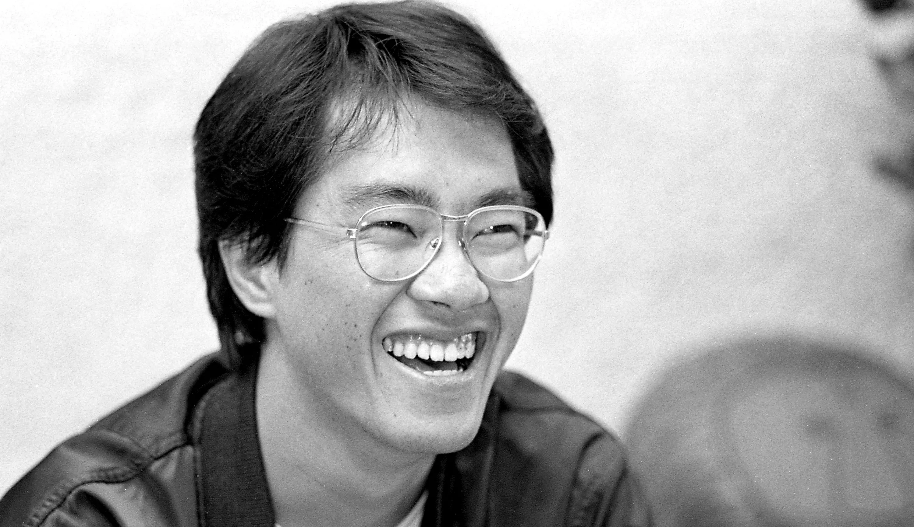
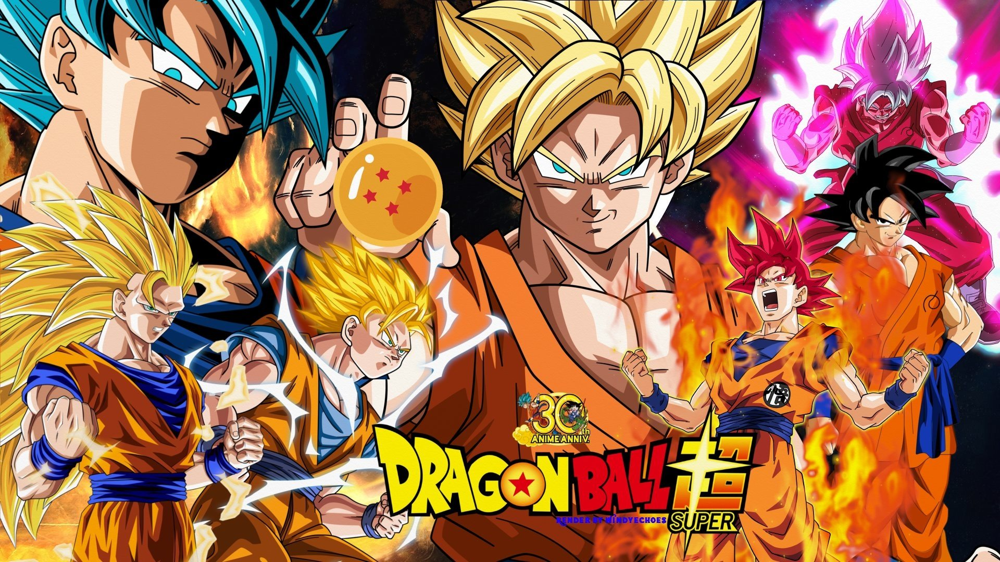

Akira Toriyama
Autor japonês de mangá
Akira Toriyama
Sobre os anos iniciais como desenhista
Akira iniciou sua carreira em 1978 com a história Wonder Island publicada na Weekly Shonen Jump, depois fez outros mangás: Highlight Island, seguido por Tomato Girl Detective.
Ele conquistou sua fama com Dr. Slump, publicada semanalmente na Shonen Jump de 1980 a 1984, gerando 18 volumes encadernados, que veio a ser o primeiro anime baseado em uma obra de Toriyama.
Ele provavelmente é mais conhecido por ser o autor da famosa série Dragon Ball. Essa série é conhecida como um dos eixos ao lado de Hokuto no Ken para o que foi conhecido como "a Era Dourada da Jump". Seu sucesso "forçou" Toriyama a trabalhar em Dragon Ball de 1984 a 1995. Durante esse período de onze anos, ele produziu 42 volumes. Cada volume tem uma média de 200 páginas, de maneira que toda trama de Dragon Ball se estende por quase 10 000 páginas. Além disso, o sucesso de Dragon Ball levou a uma série de anime para televisão, filmes de longa-metragem, Video games, e um mega-merchandising
"Muita fantasia perde a realidade, muita esperança pode parecer de alguma forma vazia."
Akira Toriyama
Curiosidades sobre Akira Toriyama
- Akira Toriyama foi presidente do clube de mangá de sua escola, revelando sua paixão precoce pelos quadrinhos japoneses.
- Além de mangaká, Toriyama deixou um legado nos jogos, contribuindo com Dragon Quest e Chrono Trigger.
- Mesmo com grande fama, Toriyama respeitava outros mangakás, colecionando autógrafos e mantendo amizades com eles.
- Inicialmente voltado para o humor, Toriyama relutou em criar um mangá de luta, mas acabou criando Dragon Ball.
- Toriyama tinha ídolos como Jackie Chan e Ayrton Senna, este último homenageado em sua obra.
“Dentro de mim, 'Dragon Ball' se tornou uma coisa do passado, mas depois fiquei chateado com o filme live-action, revisei o roteiro do filme de anime e reclamei da qualidade do anime de TV. Acho que, em algum momento, se tornou um trabalho que gosto tanto que não consigo deixar de lado.”
Akira Toriyama
Dragon-Ball Super